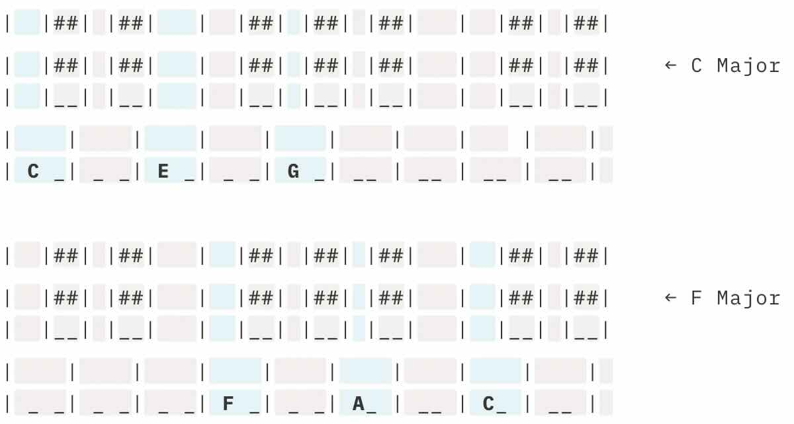
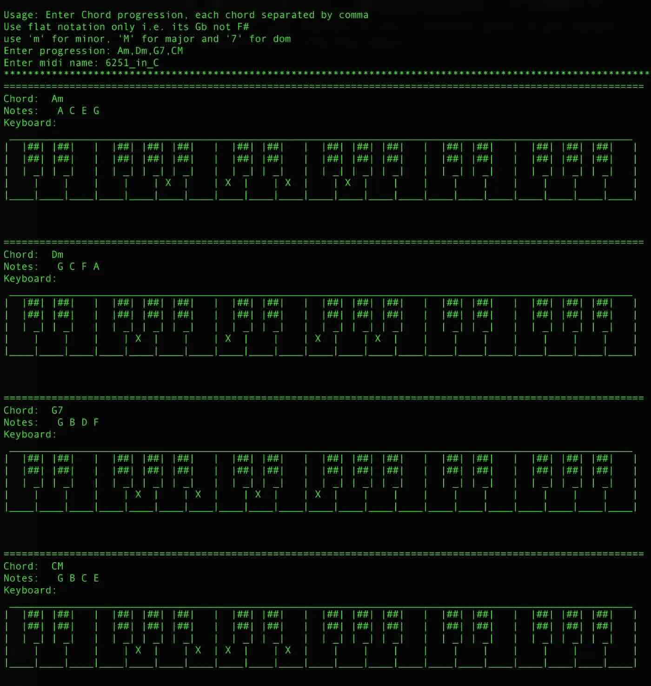

Jazz voicings generator
I enjoy arranging music (from vocal ensembles, quartets, jazz, big band…). One key concept in arranging, especially for voice, is voice leading. Voice leading means that if you are writing a melodic line, you want to minimise jumping around but use the closest notes around you whilst still getting your target note. Voice leading is not just used for vocal arranging but even in the instrument world. If playing a jazz solo on trumpet and you’re thinking of a hip line, it’ll will sound way better with some voice leading. A sax soli in a band, the voicings will sound better if there’s voice leading. If you play organ, especially gospel organ, voice leading will provide minimal movement, making it sound better.
So how does it work? Let’s say you are arranging a song for a trio and part of song, the chords are C Major and then F Major. On piano, one could play them in their root positions.
don't judge my piano diagrams'
This works, for instruments, however, if it was voices, it would mean the top part is going from a G to a C(a interval of a fourth) and same applies to the other 2 parts. If we change the inversion of the F Major chord to 2nd inversion, then there’s minimal movement.
This means the top part will be moving from a G to an A (just a tone), 2nd part from E to an F (semitone) and bottom part stays where it was. Imagine the process applied to an entire line of a song instead of just 2 chords, and that’s voice leading.
Okay, enough about the boring music theory lesson. I like coding and I had free time on my hands. I discovered the midiutil python module which allows you to generate &/ analyse midis. I decided one afternoon to create a voicing generator of sorts. The idea is that you enter in a chord progression (basic 7th chords) and it can generate a 4 part voicings which involve voice leading as well as interesting jazz harmony. The idea was to incorporate 4 part substitutions to create sounds which may not be conventional but still work. (more on the idea of 4 part substitutions later)
Here's a video of the program running:
I used a 6–2–5–1 progression as my input.
The program generates the notes for the chord progression as well as a midi of how the progression would sound. See screenshot below:
This was me just messing about with the library one afternoon, but I’m sure given enough time and ideas, a lot can be done with this. I’ll look into utilising this better in the future.